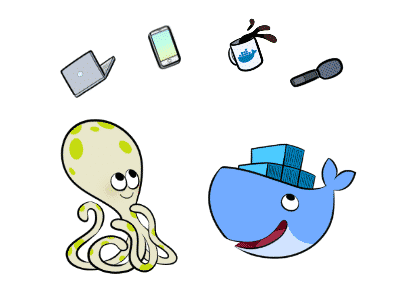
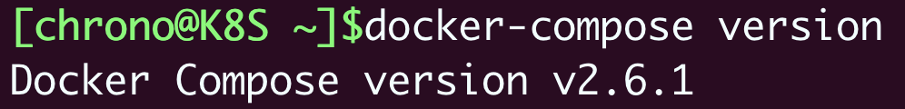
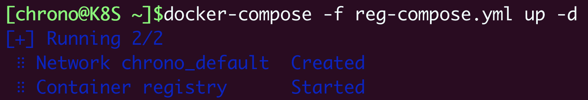
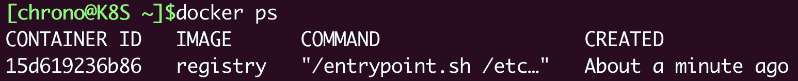
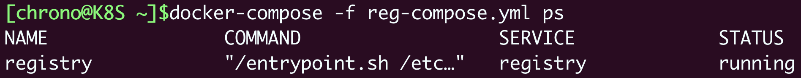
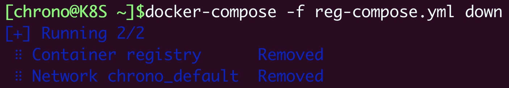
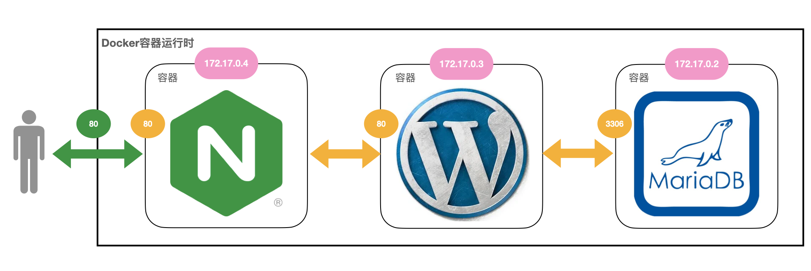
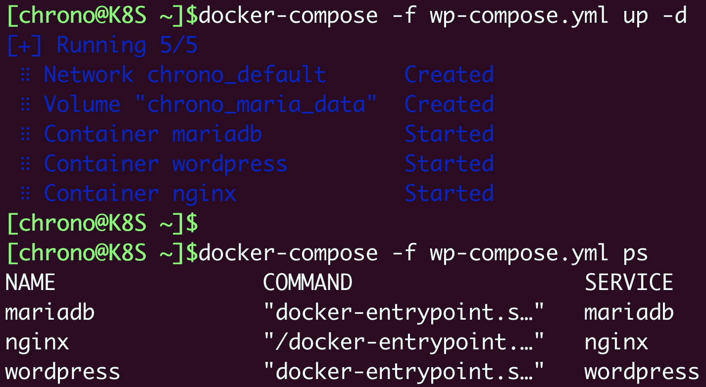
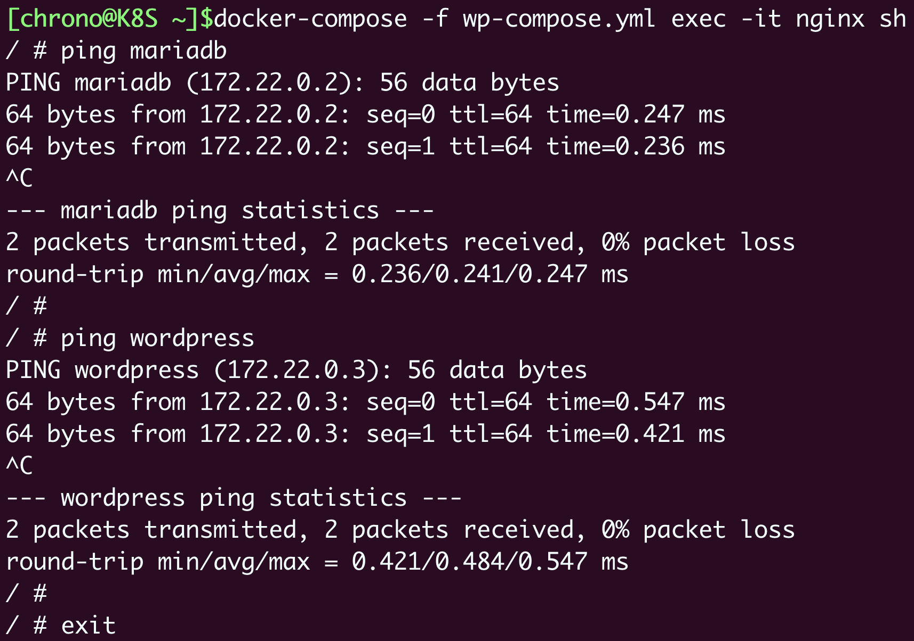
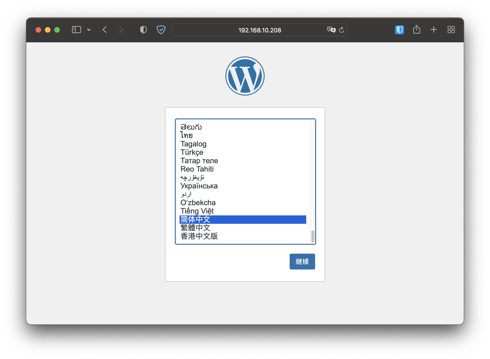

- 00 开篇词 迎难而上，做云原生时代的弄潮儿.md.html
- 00 课前准备 动手实践才是最好的学习方式.md.html
- 01 初识容器：万事开头难.md.html
- 02 被隔离的进程：一起来看看容器的本质.md.html
- 03 容器化的应用：会了这些你就是Docker高手.md.html
- 04 创建容器镜像：如何编写正确、高效的Dockerfile.md.html
- 05 镜像仓库：该怎样用好Docker Hub这个宝藏.md.html
- 06 打破次元壁：容器该如何与外界互联互通.md.html
- 07 实战演练：玩转Docker.md.html
- 08 视频：入门篇实操总结.md.html
- 09 走近云原生：如何在本机搭建小巧完备的Kubernetes环境.md.html
- 10 自动化的运维管理：探究Kubernetes工作机制的奥秘.md.html
- 11 YAML：Kubernetes世界里的通用语.md.html
- 12 Pod：如何理解这个Kubernetes里最核心的概念？.md.html
- 13 Job_CronJob：为什么不直接用Pod来处理业务？.md.html
- 14 ConfigMap_Secret：怎样配置、定制我的应用.md.html
- 15 实战演练：玩转Kubernetes（1）.md.html
- 16 视频：初级篇实操总结.md.html
- 17 更真实的云原生：实际搭建多节点的Kubernetes集群.md.html
- 18 Deployment：让应用永不宕机.md.html
- 19 Daemonset：忠实可靠的看门狗.md.html
- 20 Service：微服务架构的应对之道.md.html
- 21 Ingress：集群进出流量的总管.md.html
- 22 实战演练：玩转Kubernetes（2）.md.html
- 23 视频：中级篇实操总结.md.html
- 24 PersistentVolume：怎么解决数据持久化的难题？.md.html
- 25 PersistentVolume + NFS：怎么使用网络共享存储？.md.html
- 26 StatefulSet：怎么管理有状态的应用？.md.html
- 27 滚动更新：如何做到平滑的应用升级降级？.md.html
- 28 应用保障：如何让Pod运行得更健康？.md.html
- 29 集群管理：如何用名字空间分隔系统资源？.md.html
- 30 系统监控：如何使用Metrics Server和Prometheus？.md.html
- 31 网络通信：CNI是怎么回事？又是怎么工作的？.md.html
- 32 实战演练：玩转Kubernetes（3）.md.html
- 33 视频：高级篇实操总结.md.html
- 加餐 docker-compose：单机环境下的容器编排工具.md.html
- 加餐 谈谈Kong Ingress Controller.md.html
- 结束语 是终点，更是起点.md.html
- 捐赠
加餐 docker-compose：单机环境下的容器编排工具
你好，我是Chrono。
我们的课程学到了这里，你已经对Kubernetes有相当程度的了解了吧。
作为云原生时代的操作系统，Kubernetes源自Docker又超越了Docker，依靠着它的master/node架构，掌控成百上千台的计算节点，然后使用YAML语言定义各种API对象来编排调度容器，实现了对现代应用的管理。
不过，你有没有觉得，在Docker和Kubernetes之间，是否还缺了一点什么东西呢？
Kubernetes的确是非常强大的容器编排平台，但强大的功能也伴随着复杂度和成本的提升，不说那几十个用途各异的API对象，单单说把Kubernetes运行起来搭建一个小型的集群，就需要耗费不少精力。但是，有的时候，我们只是想快速启动一组容器来执行简单的开发、测试工作，并不想承担Kubernetes里apiserver、scheduler、etcd这些组件的运行成本。
显然，在这种简易任务的应用场景里，Kubernetes就显得有些“笨重”了。即使是“玩具”性质的minikube、kind，对电脑也有比较高的要求，会“吃”掉不少的计算资源，属于“大材小用”。
那到底有没有这样的工具，既像Docker一样轻巧易用，又像Kubernetes一样具备容器编排能力呢？
今天我就来介绍docker-compose，它恰好满足了刚才的需求，是一个在单机环境里轻量级的容器编排工具，填补了Docker和Kubernetes之间的空白位置。
什么是docker-compose
还是让我们从Docker诞生那会讲起。
在Docker把容器技术大众化之后，Docker周边涌现出了数不胜数的扩展、增强产品，其中有一个名字叫“Fig”的小项目格外令人瞩目。
Fig为Docker引入了“容器编排”的概念，使用YAML来定义容器的启动参数、先后顺序和依赖关系，让用户不再有Docker冗长命令行的烦恼，第一次见识到了“声明式”的威力。
Docker公司也很快意识到了Fig这个小工具的价值，于是就在2014年7月把它买了下来，集成进Docker内部，然后改名成了“docker-compose”。

从这段简短的历史中你可以看到，虽然docker-compose也是容器编排技术，也使用YAML，但它的基因与Kubernetes完全不同，走的是Docker的技术路线，所以在设计理念和使用方法上有差异就不足为怪了。
docker-compose自身的定位是管理和运行多个Docker容器的工具，很显然，它没有Kubernetes那么“宏伟”的目标，只是用来方便用户使用Docker而已，所以学习难度比较低，上手容易，很多概念都是与Docker命令一一对应的。
但这有时候也会给我们带来困扰，毕竟docker-compose和Kubernetes同属容器编排领域，用法不一致就容易导致认知冲突、混乱。考虑到这一点，我们在学习docker-compose的时候就要把握一个“度”，够用就行，不要太过深究，否则会对Kubernetes的学习造成一些不良影响。
如何使用docker-compose
docker-compose的安装非常简单，它在GitHub（https://github.com/docker/compose）上提供了多种形式的二进制可执行文件，支持Windows、macOS、Linux等操作系统，也支持x86_64、arm64等硬件架构，可以直接下载。
在Linux上安装的Shell命令我放在这里了，用的是最新的2.6.1版本：
# intel x86_64
sudo curl -SL https://github.com/docker/compose/releases/download/v2.6.1/docker-compose-linux-x86_64 \
-o /usr/local/bin/docker-compose
# apple m1
sudo curl -SL https://github.com/docker/compose/releases/download/v2.6.1/docker-compose-linux-aarch64 \
-o /usr/local/bin/docker-compose
sudo chmod +x /usr/local/bin/docker-compose
sudo ln -s /usr/local/bin/docker-compose /usr/bin/docker-compose
安装完成之后，来看一下它的版本号，命令是 docker-compose version，用法和 docker version 是一样的：
docker-compose version

接下来，我们就要编写YAML文件，来管理Docker容器了，先用[第7讲]里的私有镜像仓库作为示范吧。
docker-compose里管理容器的核心概念是“service”。注意，它与Kubernetes里的 Service 虽然名字很像，但却是完全不同的东西。docker-compose里的“service”就是一个容器化的应用程序，通常是一个后台服务，用YAML定义这些容器的参数和相互之间的关系。
如果硬要和Kubernetes对比的话，和“service”最像的API对象应该算是Pod里的container了，同样是管理容器运行，但docker-compose的“service”又融合了一些Service、Deployment的特性。
下面的这个就是私有镜像仓库Registry的YAML文件，关键字段就是“services”，对应的Docker命令我也列了出来：
docker run -d -p 5000:5000 registry
services:
registry:
image: registry
container_name: registry
restart: always
ports:
- 5000:5000
把它和Kubernetes对比一下，你会发现它和Pod定义非常像，“services”相当于Pod，而里面的“service”就相当于“spec.containers”：
apiVersion: v1
kind: Pod
metadata:
name: ngx-pod
spec:
restartPolicy: Always
containers:
- image: nginx:alpine
name: ngx
ports:
- containerPort: 80
比如用 image 声明镜像，用 ports 声明端口，很容易理解，只是在用法上有些不一样，像端口映射用的就还是Docker的语法。
由于docker-compose的字段定义在官网（https://docs.docker.com/compose/compose-file/）上有详细的说明文档，我就不在这里费口舌解释了，你可以自行参考。
需要提醒的是，在docker-compose里，每个“service”都有一个自己的名字，它同时也是这个容器的唯一网络标识，有点类似Kubernetes里 Service 域名的作用。
好，现在我们就可以启动应用了，命令是 docker-compose up -d，同时还要用 -f 参数来指定YAML文件，和 kubectl apply 差不多：
docker-compose -f reg-compose.yml up -d

因为docker-compose在底层还是调用的Docker，所以它启动的容器用 docker ps 也能够看到：

不过，我们用 docker-compose ps 能够看到更多的信息：
docker-compose -f reg-compose.yml ps

下面我们把Nginx的镜像改个标签，上传到私有仓库里测试一下：
docker tag nginx:alpine 127.0.0.1:5000/nginx:v1
docker push 127.0.0.1:5000/nginx:v1
再用curl查看一下它的标签列表，就可以看到确实上传成功了：
curl 127.1:5000/v2/nginx/tags/list

想要停止应用，我们需要使用 docker-compose down 命令：
docker-compose -f reg-compose.yml down

通过这个小例子，我们就成功地把“命令式”的Docker操作，转换成了“声明式”的docker-compose操作，用法与Kubernetes十分接近，同时还没有Kubernetes那些昂贵的运行成本，在单机环境里可以说是最适合不过了。
使用docker-compose搭建WordPress网站
不过，私有镜像仓库Registry里只有一个容器，不能体现docker-compose容器编排的好处，我们再用它来搭建一次WordPress网站，深入感受一下。
架构图和第7讲还是一样的：

第一步还是定义数据库MariaDB，环境变量的写法与Kubernetes的ConfigMap有点类似，但使用的字段是 environment，直接定义，不用再“绕一下”：
services:
mariadb:
image: mariadb:10
container_name: mariadb
restart: always
environment:
MARIADB_DATABASE: db
MARIADB_USER: wp
MARIADB_PASSWORD: 123
MARIADB_ROOT_PASSWORD: 123
我们可以再对比第7讲里启动MariaDB的Docker命令，可以发现docker-compose的YAML和命令行是非常像的，几乎可以直接照搬：
docker run -d --rm \
--env MARIADB_DATABASE=db \
--env MARIADB_USER=wp \
--env MARIADB_PASSWORD=123 \
--env MARIADB_ROOT_PASSWORD=123 \
mariadb:10
第二步是定义WordPress网站，它也使用 environment 来设置环境变量：
services:
...
wordpress:
image: wordpress:5
container_name: wordpress
restart: always
environment:
WORDPRESS_DB_HOST: mariadb #注意这里，数据库的网络标识
WORDPRESS_DB_USER: wp
WORDPRESS_DB_PASSWORD: 123
WORDPRESS_DB_NAME: db
depends_on:
- mariadb
不过，因为docker-compose会自动把MariaDB的名字用做网络标识，所以在连接数据库的时候（字段 WORDPRESS_DB_HOST）就不需要手动指定IP地址了，直接用“service”的名字 mariadb 就行了。这是docker-compose比Docker命令要方便的一个地方，和Kubernetes的域名机制很像。
WordPress定义里还有一个值得注意的是字段 depends_on，它用来设置容器的依赖关系，指定容器启动的先后顺序，这在编排由多个容器组成的应用的时候是一个非常便利的特性。
第三步就是定义Nginx反向代理了，不过很可惜，docker-compose里没有ConfigMap、Secret这样的概念，要加载配置还是必须用外部文件，无法集成进YAML。
Nginx的配置文件和第7讲里也差不多，同样的，在 proxy_pass 指令里不需要写IP地址了，直接用WordPress的名字就行：
server {
listen 80;
default_type text/html;
location / {
proxy_http_version 1.1;
proxy_set_header Host $host;
proxy_pass http://wordpress; #注意这里，网站的网络标识
}
}
然后我们就可以在YAML里定义Nginx了，加载配置文件用的是 volumes 字段，和Kubernetes一样，但里面的语法却又是Docker的形式：
services:
...
nginx:
image: nginx:alpine
container_name: nginx
hostname: nginx
restart: always
ports:
- 80:80
volumes:
- ./wp.conf:/etc/nginx/conf.d/default.conf
depends_on:
- wordpress
到这里三个“service”就都定义好了，我们用 docker-compose up -d 启动网站，记得还是要用 -f 参数指定YAML文件：
docker-compose -f wp-compose.yml up -d
启动之后，用 docker-compose ps 来查看状态：

我们也可以用 docker-compose exec 来进入容器内部，验证一下这几个容器的网络标识是否工作正常：
docker-compose -f wp-compose.yml exec -it nginx sh

从截图里你可以看到，我们分别ping了 mariadb 和 wordpress 这两个服务，网络都是通的，不过它的IP地址段用的是“172.22.0.0/16”，和Docker默认的“172.17.0.0/16”不一样。
再打开浏览器，输入本机的“127.0.0.1”或者是虚拟机的IP地址（我这里是“http://192.168.10.208”），就又可以看到熟悉的WordPress界面了：

小结
好了，今天我们暂时离开了Kubernetes，回头看了一下Docker世界里的容器编排工具docker-compose。
和Kubernetes比起来，docker-compose有它自己的局限性，比如只能用于单机，编排功能比较简单，缺乏运维监控手段等等。但它也有优点：小巧轻便，对软硬件的要求不高，只要有Docker就能够运行。
所以虽然Kubernetes已经成为了容器编排领域的霸主，但docker-compose还是有一定的生存空间，像GitHub上就有很多项目提供了docker-compose YAML来快速搭建原型或者测试环境，其中的一个典型就是CNCF Harbor。
对于我们日常工作来说，docker-compose也是很有用的。如果是只有几个容器的简单应用，用Kubernetes来运行实在是有种“杀鸡用牛刀”的感觉，而用Docker命令、Shell脚本又很不方便，这就是docker-compose出场的时候了，它能够让我们彻底摆脱“命令式”，全面使用“声明式”来操作容器。
我再简单小结一下今天的内容：
- docker-compose源自Fig，是专门用来编排Docker容器的工具。
- docker-compose也使用YAML来描述容器，但语法语义更接近Docker命令行。
- docker-compose YAML里的关键概念是“service”，它是一个容器化的应用。
- docker-compose的命令与Docker类似，比较常用的有
up、ps、down，用来启动、查看和停止应用。
另外，docker-compose里还有不少有用的功能，比如存储卷、自定义网络、特权进程等等，感兴趣的话可以再去看看官网资料。
欢迎留言交流你的学习想法，我们下节课回归正课，下节课见。

© 2019 - 2023 Liangliang Lee. Powered by gin and hexo-theme-book.